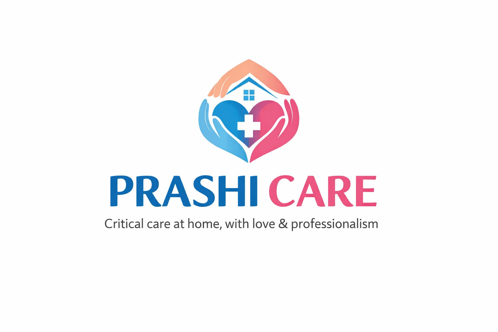
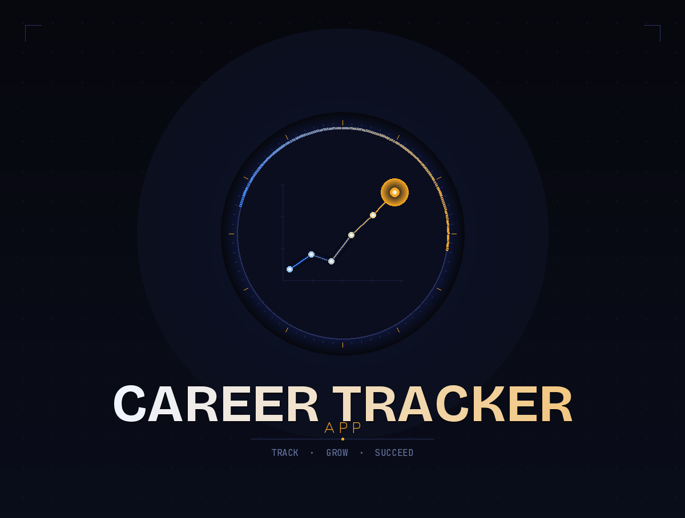

Hi, I'm Roshan Vishwakarma
Software Developer · B.Tech CS '25 · AI Enthusiast
A 2025 Computer Science graduate passionate about building scalable software, exploring AI-driven tools, and turning complex ideas into elegant digital experiences.
Technical Skills
A practical toolkit built through academic rigour and real-world projects.
Programming Languages
Web Development
AI & Tools
Data & Systems
Cloud Services
Design & Editing
Featured Projects
A few highlights — see the full catalogue on the Projects page.



Leave Management System
A comprehensive web-based Leave Management System designed to streamline the process of leave application, approval, and tracking for employees, teachers, faculty, and organizations.
Education & Journey
B.Tech in Computer Science
University of Mumbai · Mumbai, MaharashtraFocused on Software Engineering, Data Structures & Algorithms (C++), Database Systems, and Web Technologies. Graduated with distinction.
Full Stack & AI Self-Development
Independent Projects & CertificationsBuilding production-grade web applications, exploring Generative AI APIs, and completing industry-recognised certifications in cloud and web development.
Actively Seeking Full-Time Roles
Open to Relocation & RemoteLooking for Software Developer / SDE-1 positions where I can contribute to meaningful products. Open to frontend, backend, and full-stack opportunities.
Soft Skills & Management
Technical ability is one half — communication, leadership, and process thinking make up the rest.
Clear Communication
Translating technical concepts to non-technical stakeholders, writing precise documentation, and giving constructive feedback.
Team Collaboration
Experienced in Agile workflows, daily standups, and pair programming — comfortable in cross-functional teams.
Project Management
Breaking large goals into milestones, tracking progress with Kanban boards, and delivering on schedule.
Problem Solving
Structured, analytical approach to debugging and architecture decisions — first understanding the root cause.
Time Management
Prioritising tasks effectively, managing deadlines across parallel workstreams, and maintaining a consistent output pace.
Mentoring & Teaching
Peer mentoring junior students in DSA and web development — building others' skills while sharpening my own.
Adaptability
Quick to onboard new tools, frameworks, and codebases — comfortable with ambiguity and changing requirements.
Attention to Detail
Meticulous code reviews, pixel-precise UI implementation, and thorough QA habits before shipping anything.